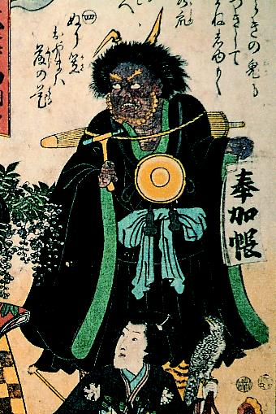

法衣を着た鬼。首から鉦を下げ、右手には撥、左手には奉加帳を持っている。鬼の肌は茶色で、黄色い角が2本生えている。そのうち1本は折れ曲がっている。
著作者：歌川国貞／出典：親書誌：A5_pushkin_0027：大津画踊尽；オオツエオドリヅクシ／日付：2011／資源識別子：A5_pushkin_0027_0001_0000
Copyright (c)2010- International Research Center for Japanese Studies, Kyoto, Japan. All rights reserved.